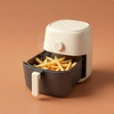
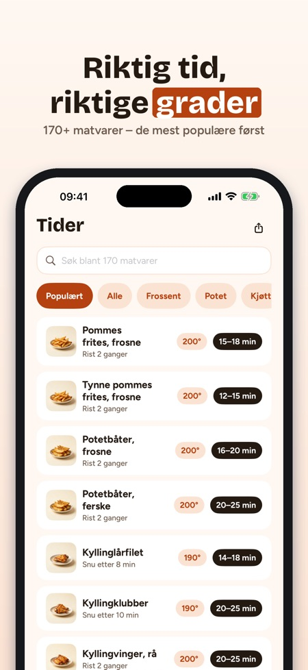
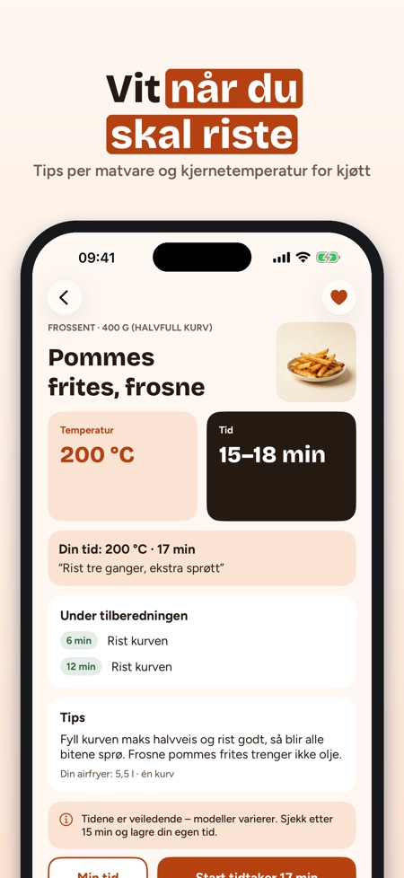
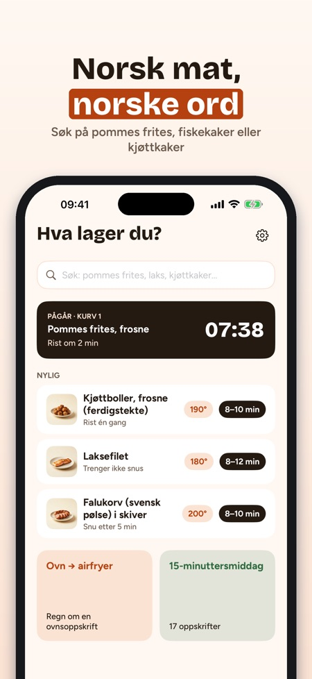

Tider, grader og timer. Ny airfryer til jul? Krispa viser tid og grader for 170+ matvarer – og nedtellingen vises på låseskjermen. Nytt: ribbe med sprø svor.



Riktig tid, riktig temperatur – på norsk.
Ingen reklame, ingen konto – tidstabellen fungerer uten kjøp.
Krispa er airfryer-appen for norske kjøkken: hvor lenge og hvor varmt for 170+ matvarer, en omregner for ovnsoppskrifter og timere som minner deg på å riste kurven.
TIDSTABELL FOR 170+ MATVARER
• Frosne pommes frites, fiskepinner, fiskekaker, kyllingfilet, laks, grønnsaker, brød og snacks
• Temperatur, tidsintervall og når du skal riste eller snu
• Søk på norsk – «pommes», «laks», «fiskekaker»
• Tips om mengde, olje og hvordan du får det sprøtt
OVN → AIRFRYER
• Legg inn ovnens temperatur og tid (over-/undervarme eller varmluft)
• Få et forslag for airfryeren og når du bør sjekke – en tommelfingerregel, tydelig merket som det
TIMERE SOM SIER FRA
• Varsel når det er tid for å riste eller snu, og når maten er ferdig
• To kurver? Krispa starter den korteste timeren senere, så begge blir ferdige samtidig
• Opptil fire timere samtidig med Krispa Plus
• Nedtellingen vises på låseskjermen og i Dynamic Island
68 EGNE OPPSKRIFTER
• Hverdagsmiddager, tilbehør, snacks, bakst og julemat
• Endre antall porsjoner – mengdene regnes om
• Lagemodus steg for steg med timer per steg; skjermen holder seg på
• Handleliste fra oppskriftene, sortert etter avdeling
MINE TIDER
• Lagre favoritter og din egen tid, temperatur og notat – «våre pommes: 17 min, rist tre ganger»
MATTRYGGHET
Kylling, svin og kjøttdeig viser en laveste kjernetemperatur – det strengeste rådet blant de nordiske mattilsynene. Fisk: sjekk at den er gjennomstekt. Tidene er veiledende – modellene er ulike, så sjekk alltid i tide.
HJELP
Forvarming, bakepapir, rengjøring, plassering og sikkerhet, hvit røyk, to kurver og hvorfor maten ikke blir sprø.
KRISPA PLUS
Tidstabellen, omregneren, én timer og 10 oppskrifter er med uten kjøp. Krispa Plus åpner alle 68 oppskrifter, opptil fire timere, lagemodus, egne tider og handlelisten. Velg årsabonnement (fornyes automatisk, avslutt når som helst i App Store-innstillingene) eller et engangskjøp. Nye abonnenter starter årsabonnementet med 7 dagers prøveperiode.
Fungerer uten internett. Ingen konto. Krispa er ikke knyttet til noe airfryer-merke.